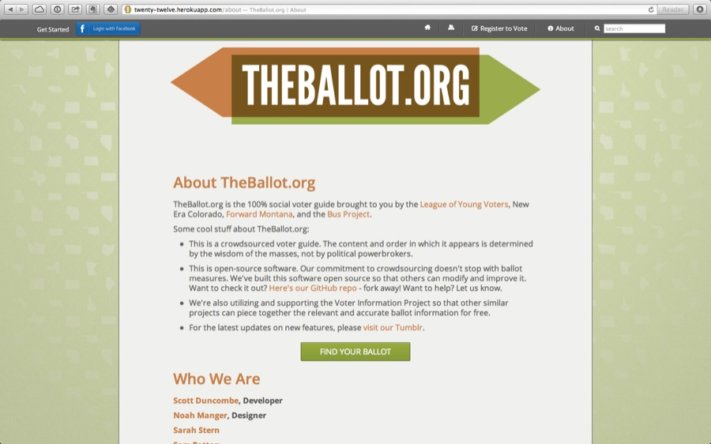
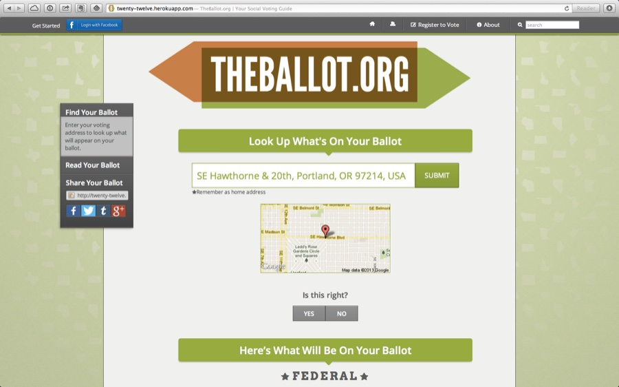
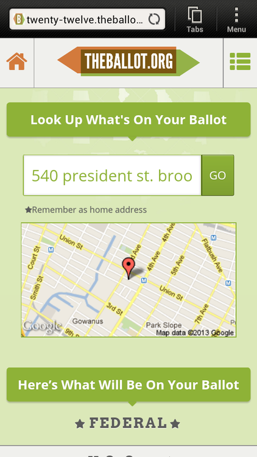
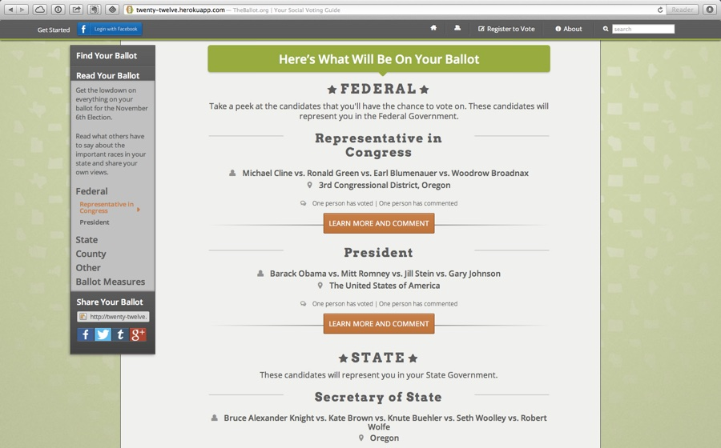
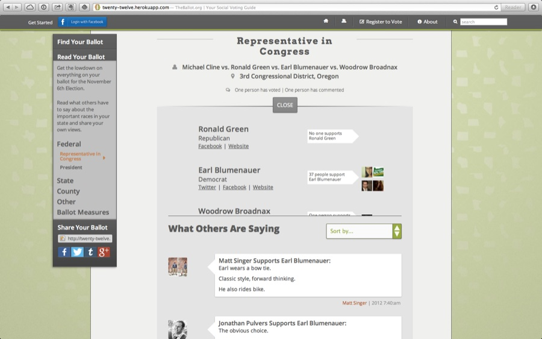
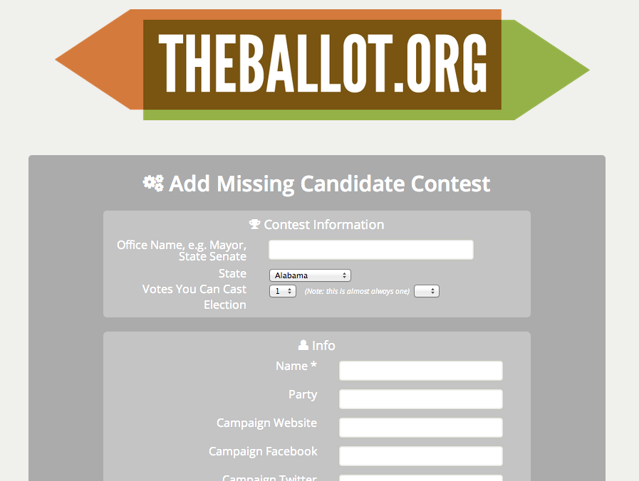
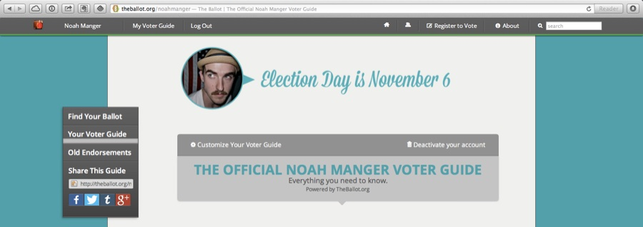
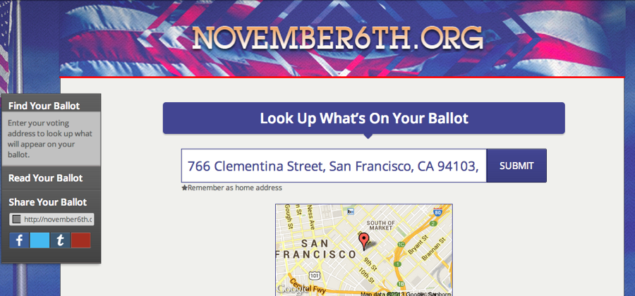

Nº 09 · Habitat I — Democracy & elections
TheBallot.org & November6th.org
A 100% social voter guide built with League of Young Voters, New Era Colorado, Forward Montana, and the Bus Project.
- First observed
- 2012
- With
- Noah Manger, League of Young Voters
The Ballot is a crowd-sourced social voter guide that provided 50 state coverage for the 2012 election - down the State legislative level - allowing voters to look up what was on their ballot by using just their address. Kind of like Yelp, but for Democracy, The Ballot was built to deliver localized information that was filled with local-reviews and insights.
Users could log in using Facebook, create and customize their own voter guides, and share their endorsements and views. They could also add any missing candidates or ballot measures. Fully optimized for mobile and tablets - so you could use it at home or in the polling booth. Also included a C3 (no endorsement) version called November 6th.
After launching in early September - both sites were visited by 145,000 unique visitors before election day, including nearly 50,000 on election day, and had over 2,000 registered users. It was even tweeted by Snoop Dogg Lion.
Built with Ruby on Rails and Knockout JS - the site used the Google Maps API and Cicero to find visitors electoral districts and then match them to candidate data provided by the Voter Information Project. Stylesheets were written in LESS and the site continues to be hosted on Heroku.
Plates · from the field








Field notes